Los Santos · Capturas v0.4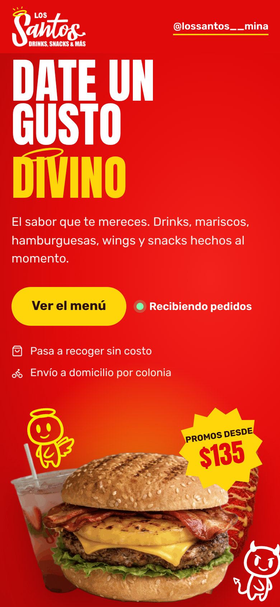
Catálogo en teléfono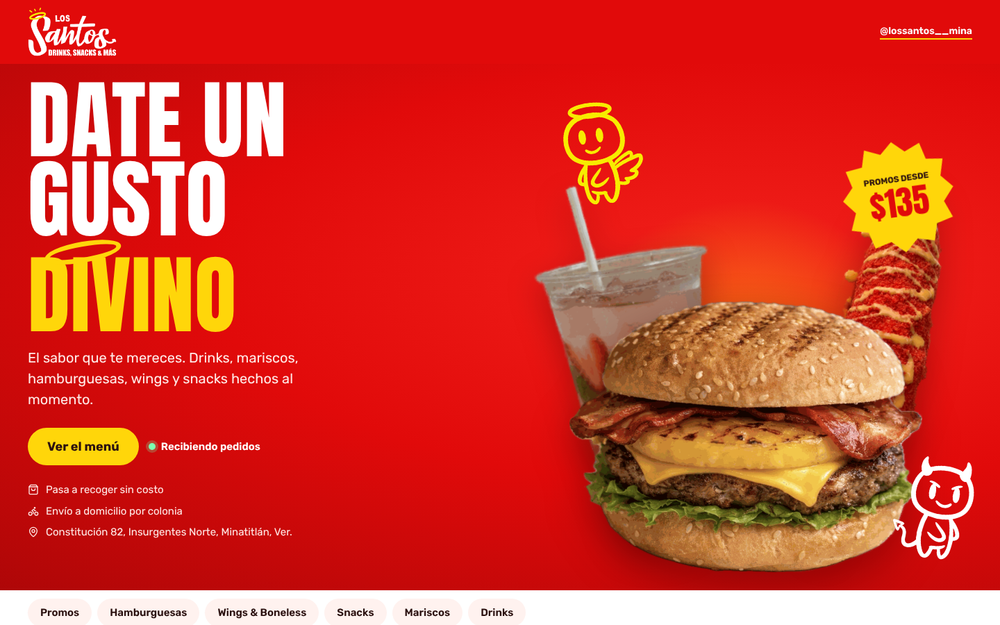
Portada en computadora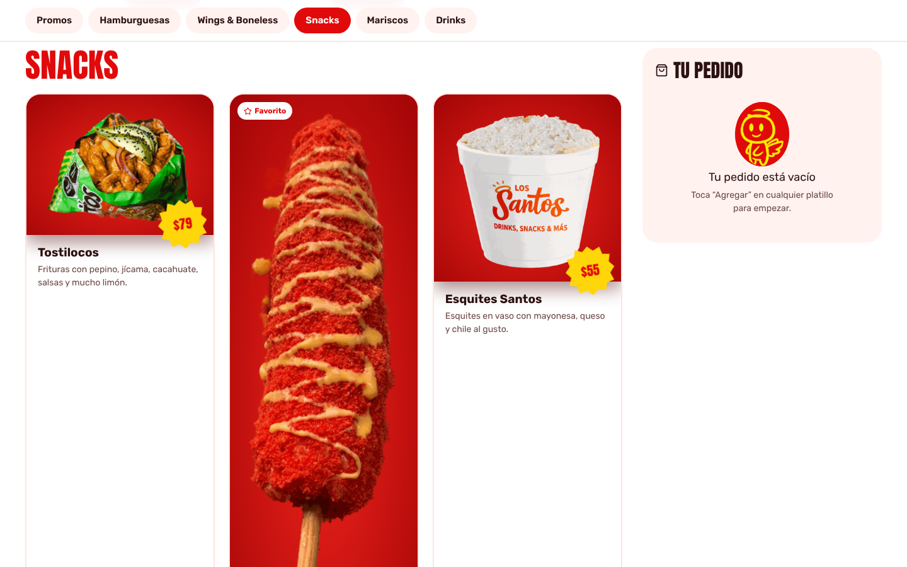
Menú por secciones y pedido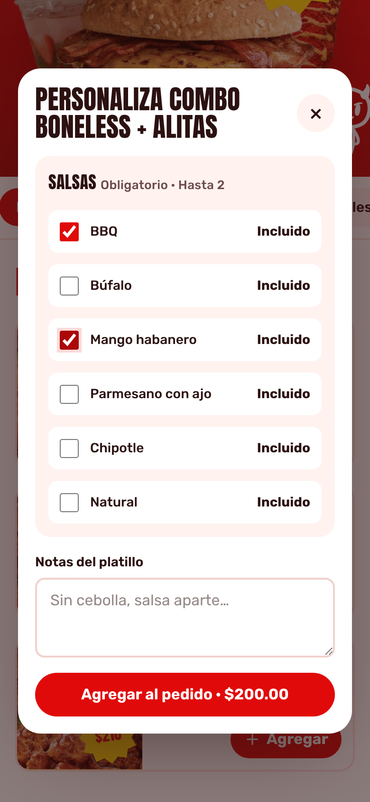
Personalizar salsas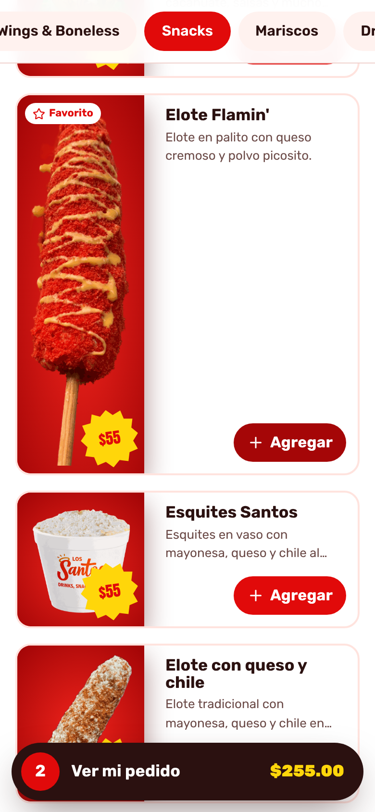
Barra de pedido en teléfono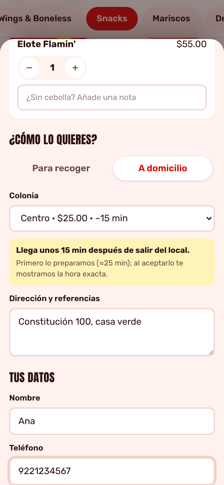
Colonia con costo y tiempo de entrega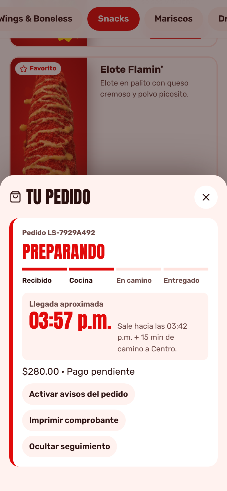
Seguimiento: llegada aproximada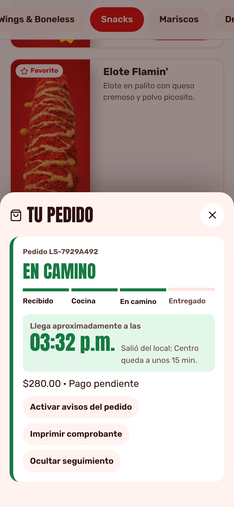
Seguimiento: en camino, hora de llegada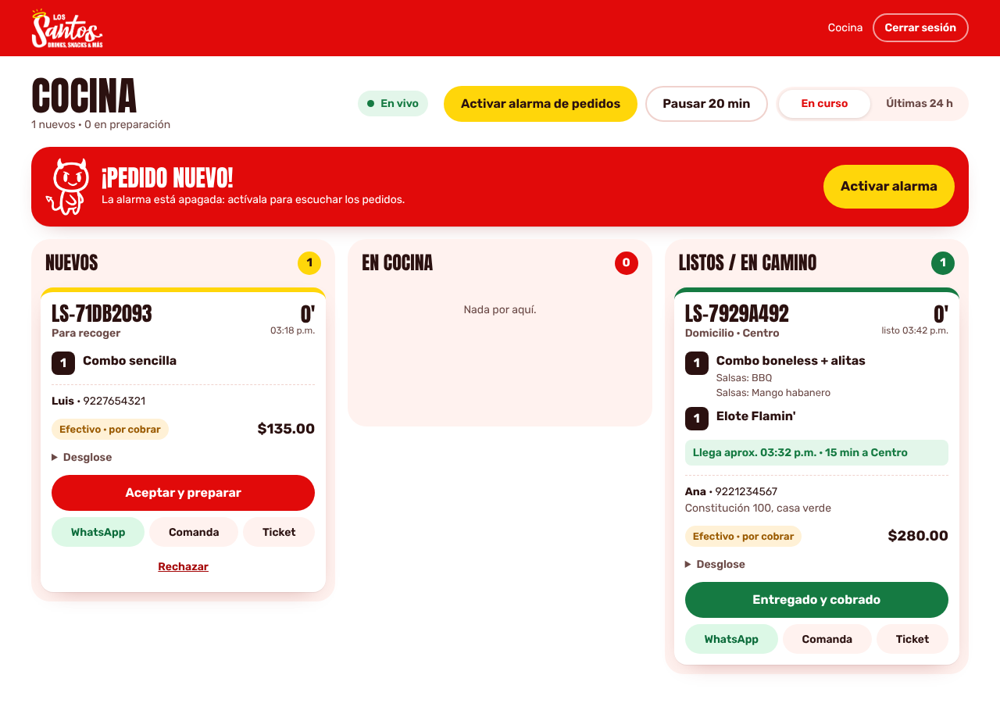
Cocina: tablero y alarma de pedido nuevo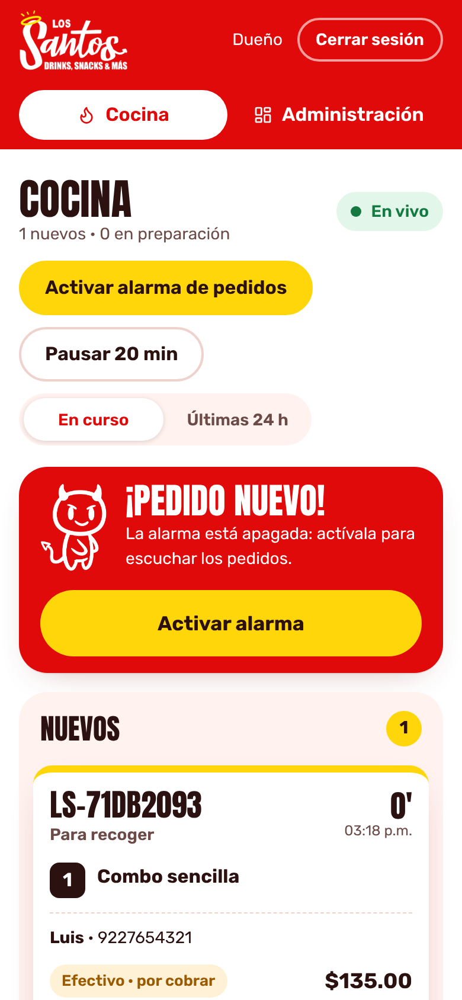
Cocina en teléfono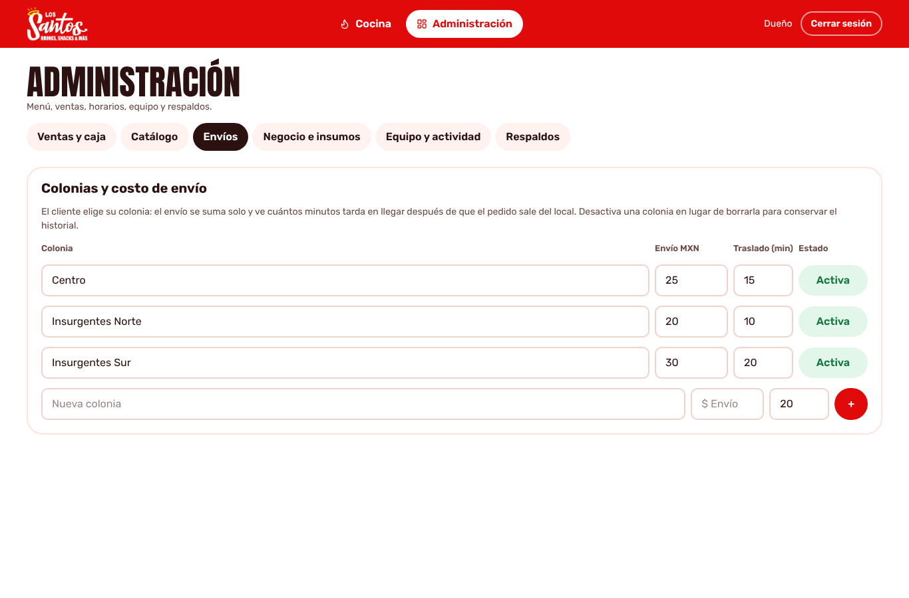
Envíos: tarifa y minutos por colonia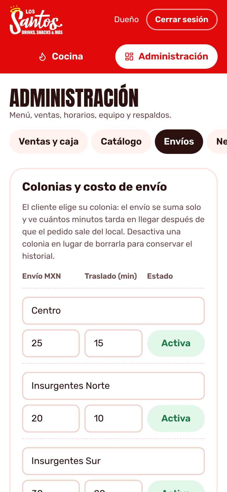
Envíos desde el teléfono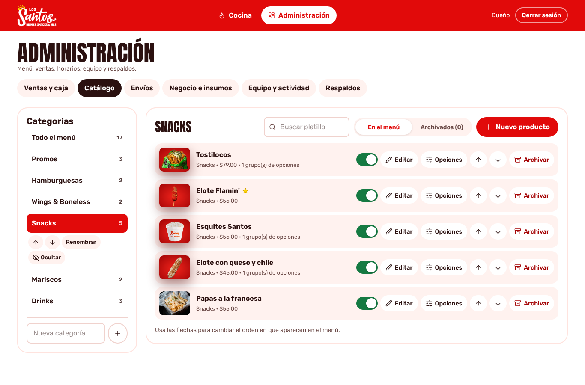
Catálogo administrable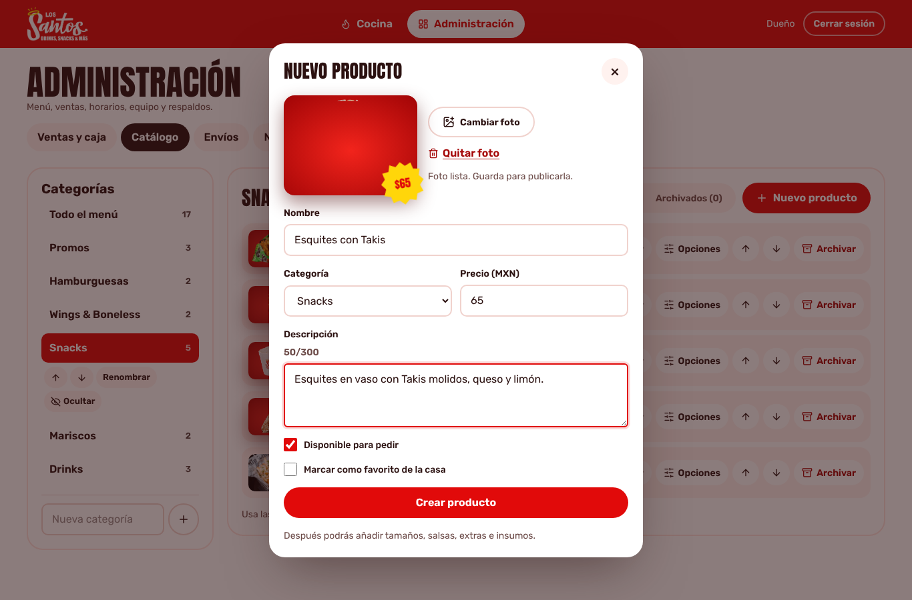
Nuevo producto con foto recortada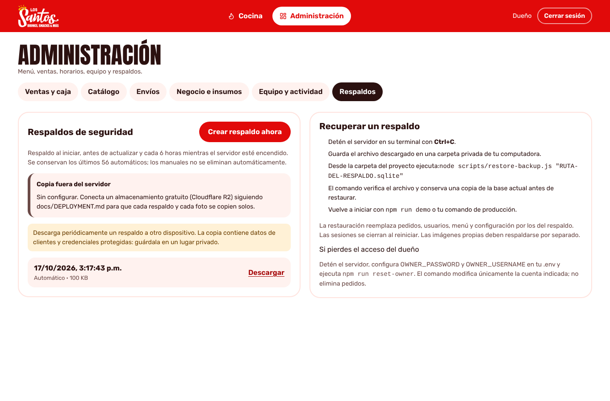
Respaldos y copia externa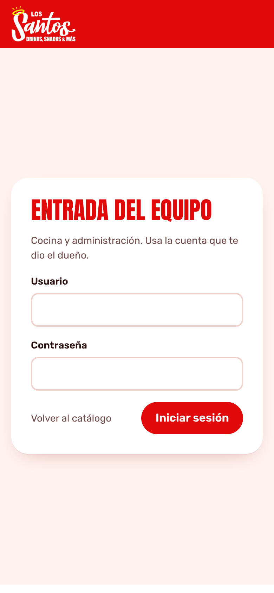
Entrada del equipo (/personal)